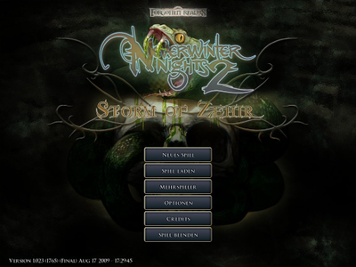
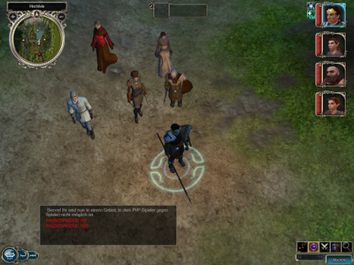

Neverwinter Nights 2
Archivierte Anleitung
Dieser Artikel wurde archiviert, da er - oder Teile daraus - nur noch unter einer älteren Ubuntu-Version nutzbar ist. Diese Anleitung wird vom Wiki-Team weder auf Richtigkeit überprüft noch anderweitig gepflegt. Zusätzlich wurde der Artikel für weitere Änderungen gesperrt.
Zum Verständnis dieses Artikels sind folgende Seiten hilfreich:
Neverwinter Nights 2  ist ein Rollenspiel welches im beliebten Forgotten-Realms-Universum von Dungeons & Dragons spielt. Die Handlung führt Sie aus einem der kleinsten Dörfer mitten hinein in eine mitreißende Geschichte rund um Gefahr und Krieg und erzählt dabei, wie Ihr Held vom einfachen Bauern zum Helden reift, der das Reich gegen eine der größten Bedrohungen seiner Zeit beschützen soll. Vorgänger dieses Spiels ist Neverwinter Nights.
ist ein Rollenspiel welches im beliebten Forgotten-Realms-Universum von Dungeons & Dragons spielt. Die Handlung führt Sie aus einem der kleinsten Dörfer mitten hinein in eine mitreißende Geschichte rund um Gefahr und Krieg und erzählt dabei, wie Ihr Held vom einfachen Bauern zum Helden reift, der das Reich gegen eine der größten Bedrohungen seiner Zeit beschützen soll. Vorgänger dieses Spiels ist Neverwinter Nights.
Mit dieser Anleitung wird das Grundspiel inklusive der Erweiterungen "Mask of the Betrayer" und "Storm of Zehir" mit Hilfe von Wine unter Ubuntu installiert. Die Installations-CDs (Windows-Version) sowie jeweils ein gültiger Lizenzschlüssel werden vorausgesetzt.
Zurzeit aktuelle Spielversion: 1.23.1765
|  |  |
| Spielmenü | Ansicht im Spiel |
Installation¶
Als erstes muss Wine installiert [1] werden, falls dies nicht bereits geschehen ist.
Sichern der aktuellen Wine-Konfiguration¶
Damit man nicht möglicherweise vorhandene Altlasten mitschleppt ist es sinnvoll, mit einer neuen Konfiguration von Wine zu beginnen. Dazu kann die aktuelle Konfiguration wie folgt gesichert werden:
mv .wine .wine.backup
Wine-Einstellungen¶
Nun werden die Grundeinstellungen in Wine [2] vorgenommen:
winecfg
| Wine-Einstellungen | ||
| Reiter | Option | Einstellung |
| "Audio" | ALSA-Treiber | deaktiviert |
| EsounD-Treiber | aktiviert | |
winetricks¶
Mit Hilfe von winetricks können auf einfachem Weg zusätzliche Runtime-Bibliotheken nachinstalliert werden. Um schnell Zugriff auf das Skript zu erhalten wird es direkt im Home-Verzeichnis abgespeichert und über folgenden Befehl [3] aufgerufen:
sh winetricks
Bei diesem Spiel benötigt man die Pakete dotnet20, directx9 (nicht d3dx9) und vcrun2005.
Hinweis:
Diese Bibliotheken können Fehler verursachen, wenn sie nicht in eine leere Wine-Konfiguraiton installiert werden.
Installation des Spiels¶
Nun wird das Grundspiel "Neverwinter Nights 2" über die CD-ROM installiert, indem man die Datei setup.exe mit einem  Doppelklick startet.
Doppelklick startet.
Anschliessend werden die beiden Erweiterungen "Neverwinter Nights 2: Mask of the Betrayer" und "Neverwinter Nights 2: Storm of Zehir" ebenfalls installiert.
Hinweis:
Ein Fehler auf der CD von "Neverwinter Nights 2: Storm of Zehir" löscht versehentlich die Datei ~/.wine/drive_c/Programme/Atari/Neverwinter Nights 2/Data/VO_X1.zip, welche die Audiodateien von "Neverwinter Nights 2: Mask of the Betrayer" enthält. Diese Datei sollte unbedingt vor der Installation der zweiten Erweiterung gesichert werden. (Das Problem tritt auch unter Windows auf!)
Updates installieren¶
Nach der Installation sollten die aktuellen Updates installiert werden. Sofern während der Installation keine Desktop-Verknüpfung angelegt wurde kann man das Spiel über den NWN2Launcher.exe, welcher im Homeverzeichnis unter ~/.wine/drive_c/Programme/Atari/Neverwinter Nights 2 zu finden ist, starten.
Der Updater von Neverwinter Nights 2 funktioniert unter Wine nicht korrekt. Updates können manuell von dieser Seite  heruntergeladen und in den Installationsordner kopiert werden. Man muss jeweils die richtigen Versionen je nach Sprach und System heraussuchen, z.B. nwn2_pcx2_german_*
heruntergeladen und in den Installationsordner kopiert werden. Man muss jeweils die richtigen Versionen je nach Sprach und System heraussuchen, z.B. nwn2_pcx2_german_*
Beim Start des Updaters über das Hauptmenu im Spiel wird jeweils der nächste Patch installiert. Dieser Vorgang muss folglich solange wiederholt werden bis man auf der neusten Version ist
Hinweis:
Ab Version 1.23.1765 benötigt man keine CD mehr zum Starten des Spiels.
Nachbearbeitungen¶
Verschieben der Installation¶
Damit das Spiel nicht versehentlich beim entfernen des Ordner .wine gelöscht wird empfiehlt es sich den Installationsordner an einen anderen Ordner zu verschieben z.B. ~/Spiele.
mkdir ~/Spiele mv "~/.wine/drive_c/Programme/Atari/Neverwinter Nights 2" "~/Spiele"
Die angepassten Wine-Einstellungen werden an einen neuen Ort verschoben, damit die Einstellungen nicht versehentlich von anderen Programmen verändert werden:
mkdir ~/.wine-alternate mv "~/.wine" "~/.wine-alternate/nwn2"
| Icon |
Starter erstellen¶
Zum starten des Spiels muss man nun einen angepassten Starter [4] erstellen. Dies wird erreicht indem man die Datei ~/Spiele/Neverwinter Nights 2/nwn2.desktop mit folgendem Inhalt erstellt:
1 2 3 4 5 6 7 8 9 10 | [Desktop Entry] Categories=; Encoding=UTF-8 Exec=env WINEPREFIX="~/.wine-alternate/nwn2" wine "~/Spiele/Neverwinter Nights 2/NWN2Launcher.exe" Hidden=false Icon=/home/detlef/Spiele/Neverwinter Nights 2/nwn2.png Name=Neverwinter Nights 2 Terminal=false Type=Application Version=1.0 |
Das Bild muss auf eine existierende Datei verweisen.
Hinweis:
Damit Neverwinter Nights 2 die neu erstellte Wine-Konfiguraiton verwendet wird dieses mit Wineprefix aufgerufen.
Grafikeinstellungen setzen¶
Je nach Grafikkarte kann es vorkommen, dass die Grafikeinstellungen nicht korrekt gespeichert werden. Dies kann jedoch leicht über die Datei ~/Neverwinter Nights 2/nwn2.ini angepasst werden:
1 2 3 4 5 6 | [Display Options] FullScreen=1 Width=1920 Height=1080 RefreshRate=60 Gamma=1.012000 |
Zurückspielen der alten Wine-Konfiguration¶
Nach der Installation wird nun die ursprüngliche Wine-Konfiguration wieder zurückgespielt, damit alle anderen Wine-Programme wieder wie gewohnt funktonieren:
mv .wine.backup .wine
Problemlösungen¶
Ihre Grafikkarte hat weniger als 128 MB Grafikspeicher. Dies kann zu Performance-Einbußen führen.¶
Falls beim starten des Spiels obige Fehlermeldung auftritt sollte eine Datei nwn2.reg mit folgendem Inhalt im Spielordner erstellt werden:
1 2 3 4 5 | Windows Registry Editor Version 5.00 [HKEY_CURRENT_USER\Software\Wine\Direct3D] OffscreenRenderingMode = fbo UseGLSL = enabled VideoMemorySize = 256 |
Diese Einstellungen können mit folgendem Befehl in die (angepasste) Registry eingefügt werden:
env WINEPREFIX="~/.wine-alternate/nwn2" wine regedit.exe "~/Spiele/Neverwinter Nights 2/nwn2.reg"

Infobox¶
| Neverwinter Nights 2 | |
| Originaltitel: | Neverwinter Nights 2 |
| Genre: | Rollenspiel |
| Sprache: |     |
| Veröffentlichung: | 2006 (Neverwinter Nights 2) / 2007 (Mask of the Betrayer) / 2008 (Storm of Zehir) |
| Publisher: | Atari |
| Systemvoraussetzungen: | 2,4 GHz-Prozessor - 512 MB RAM - 6 GB Festplattenplatz - 128 MB RAM 3D-Grafikkarte |
| Medien: | Neverwinter Nights 2 (1 DVD) |
| Strichcode / EAN / GTIN: | 3546430138519 |
| Läuft mit: | Wine |
- Erstellt mit Inyoka
-
 2004 – 2017 ubuntuusers.de • Einige Rechte vorbehalten
2004 – 2017 ubuntuusers.de • Einige Rechte vorbehalten
Lizenz • Kontakt • Datenschutz • Impressum • Serverstatus -
Serverhousing gespendet von